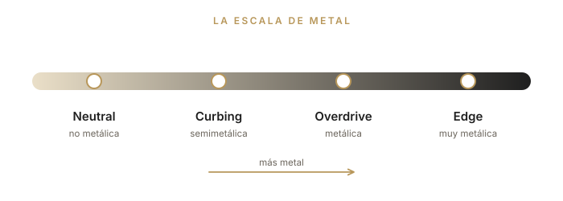
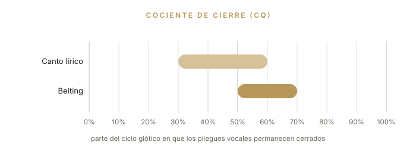
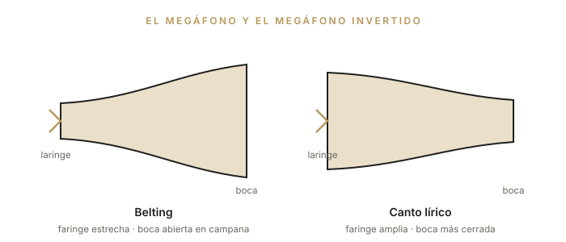

Parte IV
Funciones vocales, colores del sonido, efectos y belting: el repertorio técnico del canto contemporáneo.
La voz puede organizarse en cuatro funciones, o modos vocales. Las funciones forman una escala de “metal”, que va del timbre menos metálico de la voz al más metálico. Podríamos decir que esta escala es la “pedalera” del cantante: eliges el perfil sonoro según la necesidad técnica, tu preferencia personal o el estilo que vas a cantar. Las cuatro funciones vocales son Neutral, Curbing, Overdrive y Edge.
Cada función tiene características propias y bien diferenciadas. Entender las funciones, sus características, ventajas y límites —y aprender a aplicarlas— es imprescindible para el cantante que quiera aprovechar todo su potencial vocal con seguridad y calidad, dar color a su canto y, sobre todo, evitar problemas técnicos.

De dónde viene el término
La organización de la voz en cuatro modos —Neutral, Curbing, Overdrive y Edge—, así como las nociones de “colores del sonido” y de “efectos”, fue sistematizada por la cantante e investigadora danesa Cathrine Sadolin en el método Complete Vocal Technique (SADOLIN, 2012). Los nombres de los modos se mantienen en inglés, como en el método original.
| Función | Metal | Timbre | Dónde funciona mejor |
|---|---|---|---|
| Neutral | No metálica | Suave, redondeado, aterciopelado | Todas las regiones; en el agudo suena impostado |
| Curbing | Semimetálica | Quejumbroso, contenido | Excelente en la región media; “aplanado” en el agudo |
| Overdrive | Metálica | Grueso, denso, potente | Graves y medioagudos; evitar en la región media |
| Edge | Muy metálica | Punzante, brillante, afilado | Agudos; no recomendado en medios y graves |
Para escuchar
Ejemplos de Neutral: Emily Kokal y Ariana Grande.
Para escuchar
Ejemplos de Curbing: Paula Fernandes y Beyoncé.
Para escuchar
Ejemplos de Overdrive: Taya Smith y Beyoncé.
Para escuchar
Ejemplos de Edge: Taylor Swift y Carrie Underwood.
Atención
Las funciones más metálicas (Overdrive y Edge) exigen dominio del apoyo, del contraapoyo y del twang. Practícalas con orientación, durante poco tiempo al principio, y detente ante cualquier molestia. Los fundamentos de los Capítulos 2, 9 y 13 son requisitos previos.
Puedes modificar todas las funciones manipulando el timbre para obtener colores más claros o más oscuros. Algunas funciones admiten más cambios que otras. Los colores cambian mediante modificaciones en el tracto vocal —el espacio situado justo por encima de los pliegues vocales, que se extiende hasta los labios e incluye las fosas nasales— y en el control del apoyo y del contraapoyo, ya que la configuración de la musculatura torácica y abdominal influye en la de la musculatura de la laringe (SADOLIN, 2012).
Cada cantante tiene un cuerpo distinto; por eso, cada persona es única y alcanzará colores de sonido y efectos únicos. Solo podrás explorar estas posibilidades de cambiar el color de tu voz si aprendes a controlar cada uno de estos mecanismos físicos, para activarlos mientras cantas y obtener así colores diferentes.
Los efectos son ruidos y pequeños ornamentos que pueden añadirse a la voz o al fraseo para realzar la expresión o el estilo del cantante. Como cada voz es única, todo efecto debe construirse específicamente para cada cantante, teniendo en cuenta su anatomía, su fisiología, su nivel de energía y su temperamento.
Antes de empezar
Antes de trabajar con efectos, es importante tener bajo control los fundamentos de la voz sana (Partes I y II) y conocer y dominar las funciones y sus colores.
El belting forma parte del llamado Canto Comercial Contemporáneo Americano (CCCA), traducción libre de Contemporary Commercial Music (CCM). El término abarca las técnicas estadounidenses de belting y speech-level singing y se aplica a las técnicas asociadas a la música comercial estadounidense, presentes en Brasil en la música gospel y en otros segmentos del pop, así como en la técnica que se usa en las producciones brasileñas de musicales de Broadway. Este enfoque es reciente en Brasil, pero ya ocupa un lugar destacado en la enseñanza del canto por su fuerte atractivo comercial.
Conocer este estilo es importante porque los modelos vocales procedentes de Estados Unidos se utilizan a menudo sin rigor ni entrenamiento en musicales, espectáculos y en la música vocal brasileña, lo que provoca inconsistencia de timbre, problemas de salud y pérdida de calidad vocal.
Para entender la técnica del belt, primero hay que definir qué son los registros, ya que es un terreno que se presta a malentendidos. Según la definición clásica de Manuel Garcia (1847), los registros son “una serie de sonidos consecutivos y homogéneos, del grave al agudo, producidos por el mismo principio mecánico, y cuya naturaleza difiere esencialmente de otra serie de sonidos, igualmente consecutivos y homogéneos, producida por otro principio mecánico”.
El término belting viene del verbo to belt out, que significa cantar de manera forzada, a gritos. El término todavía genera mucha polémica. El vocólogo Ingo Titze habla de “estilo de producción”, y no de técnica. LoVetri (2003, p. 211) afirma que es “solo una etiqueta que se da a cierto aspecto de la función del registro de pecho”. Hoy, el belting se reconoce como un estilo o técnica de canto en voz mixta (mix) con predominio del subregistro de pecho, por lo general en la región más aguda de la voz. Su timbre se describe con mucho brillo (ring), voz metálica (brassiness), twanginess —el timbre “picante” que se oye en los cantantes de country— y una dinámica fuerte.
El belting surgió en la década de 1930, con cantantes como Ethel Merman, Celeste Holm y Judy Garland, como alternativa al legit, el canto lírico de Broadway, con menos proyección y más adecuado al micrófono, pero con un timbre y una producción muy parecidos a los del canto lírico.
En el musical Oklahoma!, el belting se consolidó como el timbre de los personajes caricaturescos o de los números cómicos. Desde entonces ha generado controversia entre los profesores de canto. Cornelius Reid, uno de los grandes pedagogos de la década de 1960, lo criticaba como la “práctica de los cantantes pop de cantar hasta los límites del registro de pecho”.
El belt típico de la década de 1940 puede oírse en la voz de Judy Garland: una voz de pecho pesada, que no subía mucho más allá del C4 y a veces se quebraba en el A3. Sus rasgos eran el esfuerzo continuo, el estrés y, con frecuencia, la retirada prematura.
El belt actual muestra más libertad en la producción sonora, menos esfuerzo, poco vibrato y un sonido brillante (frontal), sin la sensación de precariedad o fragilidad de antes. El timbre está definido principalmente por la acción del músculo tiroaritenoideo (TA), en una voz mixta dominada por el TA (chest mix), que puede llegar al G4 en las cantantes high belters.
La relación entre canto y habla en la música de Broadway es inherente al género. Profesores y directores no se cansan de recordar que se trata de teatro musical: la palabra, el texto, va primero. La voz está al servicio del texto. El belting nace de la necesidad de cantar para grandes públicos, sin micrófono, con una articulación cercana a la del habla, en una región próxima a la del call: la llamada fuerte, casi gritada, el “hey!”.
Por eso, la música se escribe en la región del habla (con excepción del legit, que sigue más las reglas del canto lírico). Cuando la melodía se aleja un poco de la región del habla, el belting cobra aún más importancia, porque conserva la articulación y la emisión más naturales del habla. Siempre es fundamental que el texto se entienda a la primera (SCHUTTE; MILLER, 1993, p. 142), y el sonido resultante debe parecer natural: la voz cubierta u oscura queda descartada. El belting equivale a un “discurso vehemente” (SPIVEY, 2008).
El belting tiene características propias tanto en la fuente (la fonación) como en el filtro (el tracto vocal). En la fuente, el cociente de cierre de los pliegues vocales (CQ) en el canto lírico se sitúa por lo general entre el 30 % y el 60 % (en tenores). En el belt, se sitúa de media entre el 50 % y el 70 %, en todos los tipos de voz (WELLS, 2006, p. 69), lo que pone de manifiesto una mayor tensión en la fonación, una presión subglótica más alta, niveles de presión sonora más elevados, más tensión en la musculatura extrínseca y una mayor aducción de los pliegues vocales.

Aun así, pese a la importancia del ajuste fonatorio, el componente principal del belt es el ajuste del tracto vocal (LOVETRI, 2003), que se logra de forma intuitiva mediante un proceso llamado formant tuning (sintonía de formantes). El belting se caracteriza también por una laringe ligeramente alta, una faringe más estrecha (POPEIL, 2012), twang (pliegues ariepiglóticos estrechos) y un acortamiento del tracto vocal, lo que produce un sonido más brillante.
La boca suele adoptar forma de campana —un megáfono—, con la mandíbula muy abierta, al contrario que en el canto clásico, que se caracteriza por un megáfono invertido (TITZE; WORLEY; STORY, 2011). Entre el C4 y el E4, las cantantes líricas reducen la apertura de la boca; las belters hacen lo contrario. Solo después del pasaje, ya en voz de cabeza, las cantantes clásicas abren más la boca.

Para observar
Mira actuaciones de Idina Menzel cantando en belting: se aprecia la boca en forma de campana y la mandíbula muy abierta.
Para el cantante brasileño, quizá sea más fácil aprender belting si tiene una base de canto lírico, ya que el canto popular urbano brasileño es muy distinto del belting. Cantar en belt exige gran resistencia física y muscular, un alto control respiratorio y conciencia de los ajustes del tracto vocal y de la fonación.
Existen muchos subestilos de belting, y cada profesor sigue su propia clasificación. El investigador Johan Sundberg propone la siguiente: heavy (pesado), brassy (metálico), ringy (brillante), nasal y speechlike (cercano al habla). Otros subestilos, ligados a musicales o repertorios, incluyen Old Disney, New Disney, rock-belt (como en el musical Rent), soul-belt, pop-belt y muchos más. Estos subestilos todavía dependen mucho de cada autor, y queda un largo camino hasta una clasificación definitiva.
A partir de la década de 2000, otra manifestación cultural típicamente estadounidense, el teatro musical de Broadway, alcanzó un gran éxito en Brasil, cuando empezaron a producirse espectáculos importados y adaptados al portugués. Estos espectáculos se caracterizan, al igual que el gospel, por valorar el virtuosismo vocal, lo que deja poco espacio al habla coloquial. Muchos de ellos, como Les Misérables (2001) y La Bella y la Bestia (2002), son franquicias estadounidenses que, por exigencia contractual, deben ser muy fieles a los originales. Si, por un lado, impulsaron las producciones hacia un nivel de profesionalismo hasta entonces desconocido, por otro impusieron un “paquete” con “todas las coreografías, arreglos, escenografías, vestuario y reparto de voces. (...) En estos espectáculos nada o casi nada parece creado. Y mucho menos improvisado” (VENEZIANO, 2008, p. 2-3).
La demanda de actores-cantantes que generaron estos espectáculos estimuló el interés por estudiar belting. Muchos profesores brasileños se especializaron en este tipo de canto; algunos importaron íntegramente los procedimientos de las escuelas estadounidenses —incluso obteniendo la habilitación para reproducir métodos comercializados como franquicias—, mientras que otros adaptaron esos conocimientos y desarrollaron métodos propios (MARIZ, 2013). Como en el belting los patrones articulatorios y de resonancia conducen a una emisión que tiende a sonar como el inglés estadounidense incluso cuando se canta en portugués, la técnica necesita adaptaciones para usarse en Brasil, algo que muchas veces no ocurre (ELME; FERNANDES, 2014).
En los programas de televisión se observa también una tendencia a estandarizar la interpretación vocal de los cantantes populares brasileños. El éxito de concursos de talentos estadounidenses como American Idol y The Voice se trasladó a Brasil con la importación de esas franquicias, rebautizadas como Ídolos y The Voice Brasil, que reproducen no solo el formato, sino también la valoración de una estética estandarizada, basada en el canto pop estadounidense, sobre todo el vinculado al gospel, en el que destacan los melismas (ELME; FERNANDES, 2014).
La técnica de la MPB (música popular brasileña) no tiene relación con el belting. Una canción pensada para cantarse al oído, como la bossa nova, con el micrófono lo más cerca posible, no tiene rasgos de soplo ni de timbre relacionados con la ópera o el teatro musical. Como cualquier técnica vocal, el belting debe adaptarse a las características del idioma —lo que exige tiempo y estudio— y, cuando se utiliza en la canción brasileña, debe replantearse. Al mismo tiempo, se vuelven urgentes iniciativas que ayuden a valorar y a reintegrar en la vida cotidiana brasileña el legado cultural que dejaron los compositores y cantantes populares.